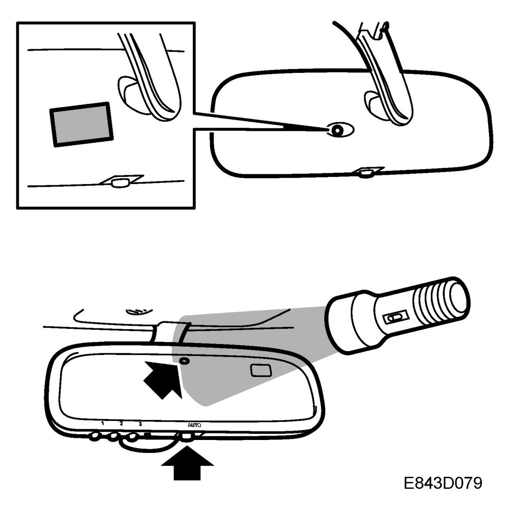

Mirrors: Testing and Inspection
Function Check Of The Autodimming Rear-view Mirrors
Check procedure
IMPORTANT: The autodimming mirrors must not be supplied with a voltage greater than 1.5 V. A higher voltage can damage the mirrors. A standard 1.5 V battery can be used to diagnose/test the dimming function.
1. Turn the ignition key to the ON position.
2. Make sure the auto button is depressed.

3. Place a piece of black tape or hold a finger over the front sensor.
4. Shine a torch on the rear sensor. The mirror should become gradually darker.
5. Turn off the torch and remove the tape. The mirror should now become gradually lighter.